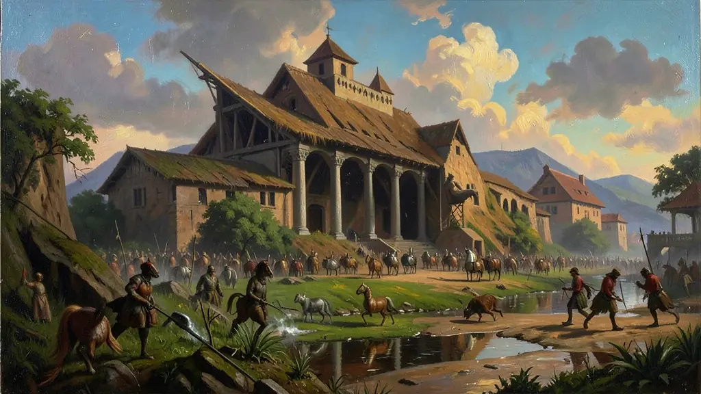
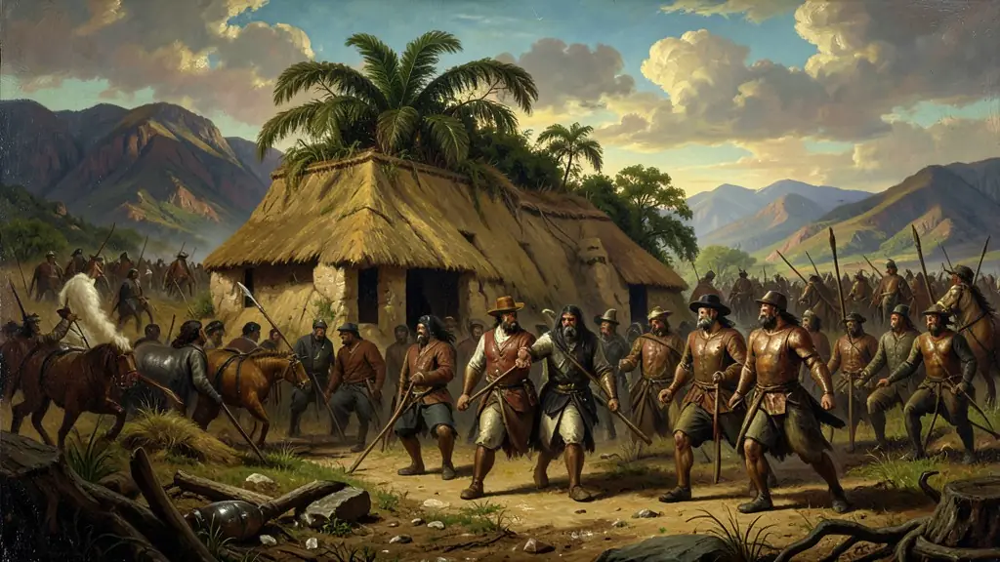
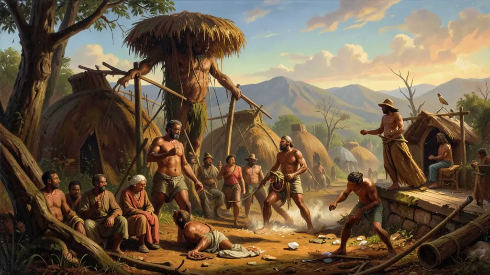

"As bandeiras foram as expedições que rasgaram o Tratado de Tordesilhas e deram ao Brasil suas dimensões continentais. Mas por trás da 'bravura', escondem-se o apresamento indígena e o extermínio de quilombos."
Bandeirantismo: Expansão e Conflitos no Interior
Séculos XVI e XVIICiências HumanasMédio
BandeirasEntradasExpansão TerritorialMamelucosTratado de Tordesilhas
O bandeirantismo foi um fenômeno centrado na Vila de Piratininga (São Paulo). Diferente do litoral nordestino, rico e açucareiro, São Paulo era uma região pobre e isolada. Para sobreviver, seus habitantes — em sua maioria **mamelucos** (filhos de portugueses com indígenas) — organizaram expedições chamadas **Bandeiras** (privadas) e **Entradas** (oficiais) rumo ao sertão.
A historiografia clássica paulista criou o mito do bandeirante como um herói desbravador de botas e gibão de couro. No entanto, a realidade era muito mais brutal. O principal objetivo inicial foi o **Bandeirantismo de Apresamento**: a captura de indígenas para o trabalho escravo nas lavouras de trigo paulistas ou para venda no litoral. Isso levou ao ataque sistemático às Missões Jesuíticas no sul (como as de Guairá), onde os índios já estavam reunidos e 'domesticados', facilitando o sequestro em massa. O segundo grande ciclo foi o **Bandeirantismo de Contrato**, onde os bandeirantes eram contratados por senhores de engenho para destruir quilombos (como o de Palmares) ou capturar escravizados fugidos.
O terceiro ciclo, as **Bandeiras de Prospecção**, resultou na descoberta do ouro em Minas Gerais, Mato Grosso e Goiás no final do século XVII. O maior impacto dessas expedições não foi apenas econômico, mas geopolítico. Ao ignorar a linha imaginária do **Tratado de Tordesilhas**, os bandeirantes expandiram as fronteiras do Brasil para o oeste, garantindo a posse de territórios que formalmente pertenciam à Espanha. Isso foi ratificado mais tarde pelo **Tratado de Madri (1750)**, baseado no princípio de *Uti Possidetis* ('quem possui a terra de fato, é o seu dono'). O ENEM costuma cobrar a revisão crítica dessa figura histórica e o impacto devastador que as bandeiras tiveram sobre as nações indígenas do interior.
Capítulo 01
1. O Cenário de São Paulo e o Isolamento
São Paulo de Piratininga ficava no alto da serra, longe dos portos. Sem o açúcar, o paulista teve que se voltar para o interior em busca de riquezas. Essa pobreza gerou uma sociedade mestiça e guerreira, que dependia da escravidão indígena para sobreviver. O bandeirante era, antes de tudo, um sertanejo que conhecia os segredos das matas tão bem quanto os nativos.
O isolamento geográfico de SP deu origem ao movimento bandeirantista.

1. O Cenário de São Paulo e o Isolamento
Capítulo 02
2. Apresamento: O Ataque às Missões Jesuíticas
Os jesuítas reuniam milhares de indígenas em povoados organizados (Reduções). Para os bandeirantes, as missões eram 'depósitos' de mão de obra pronta. Expedições como a de Raposo Tavares destruíram quase todas as missões do Sul, forçando os jesuítas e indígenas a fugirem para o que hoje é o Uruguai e a Argentina. Foi uma das épocas mais sangrentas do período colonial.
A captura do indígena foi o primeiro motor econômico das bandeiras.

2. Apresamento: O Ataque às Missões Jesuíticas
Capítulo 03
3. O Sertanismo de Contrato e Palmares
Quando não estavam caçando ouro ou índios, os bandeirantes eram mercenários. Grandes proprietários de terras pagavam para que eles 'limpassem' áreas de conflitos indígenas ou que destruíssem comunidades de escravos fugidos. Domingos Jorge Velho, o destruidor de Palmares, é o exemplo clássico dessa figura: um homem impiedoso que servia aos interesses da aristocracia latifundiária.
O bandeirante foi o braço armado da repressão colonial contra negros e índios.

3. O Sertanismo de Contrato e Palmares
Capítulo 04
4. Prospecção e o Nascimento da Mineração
A busca pelos 'Metais Preciosos' foi o sonho constante. Após décadas de expedições infrutíferas, no final do setecentos, Fernão Dias Paes e outros encontraram ouro e esmeraldas (ou turmalinas). Isso causou uma 'corrida do ouro' que mudou o centro do Brasil, levando milhares de pessoas para o interior e forçando a Coroa a criar estradas e vilas para coletar impostos.
A descoberta de ouro em Minas Gerais foi o resultado de décadas de fustigamento bandeirante no interior.
Capítulo 05
5. Geopolítica: Uti Possidetis e Tratado de Madri
Graças aos bandeirantes, o Brasil tem hoje 8 milhões de km². A diplomacia portuguesa, liderada por Alexandre de Gusmão, usou as marcas deixadas pelos bandeirantes (roças, povoados e igrejas) para provar à Espanha que aquelas terras já eram lusas. O Tratado de Madri oficializou essa expansão, enterrando para sempre o Tratado de Tordesilhas e definindo o contorno do mapa brasileiro que conhecemos.
O Brasil ultrapassou as fronteiras coloniais através da ocupação prática do território.
Texto de apoio
O fenômeno do bandeirantismo paulista, fundamental para a expansão das fronteiras territoriais para além da Linha de Tordesilhas, teve um motor profundamente violento. Ao contrário da imagem do bandeirante como explorador heroico e desbravador romântico (construída pela elite paulista no século XX), John Monteiro ressalta que as expedições eram essencialmente empresas de apresamento escravista.
A escravização dos 'negros da terra' (indígenas) supriu a escassez de mão de obra nas lavouras da capitania de São Vicente (que não possuía capital para importar escravizados africanos). Os ataques sistemáticos às reduções jesuíticas espanholas no sul revelam a ferocidade militar e a busca implacável por trabalho forçado.
O candidato do Enem deve ser capaz de desconstruir o mito do bandeirante heroico, compreendendo-o como agente da expansão territorial lusitana que, paralelamente à descoberta posterior do ouro, foi responsável pelo extermínio e desterro de incontáveis etnias indígenas formadoras do Brasil.
Fonte: MONTEIRO, John Manuel. Negros da Terra: Índios e Bandeirantes nas origens de São Paulo. Cia das Letras, 1994.
⚡
Arcade
Atividades interativas
?
Simulado
Questões para fixar
—
—
Módulo concluído
Questão A · Enem 2015 Oficial
A historiografia clássica paulista do início do século XX costuma retratar o bandeirante como um herói. Do ponto de vista dos povos indígenas e das comunidades quilombolas, essa imagem é contestada por que:
Resposta correta: B
A revisão histórica moderna reconhece o bandeirante como um agente de repressão e escravização.
Questão B · Simulado ENEM GEOPOLÍTICA
O princípio de 'Uti Possidetis', aplicado no Tratado de Madri (1750), serviu para:
Resposta correta: B
Uti Possidetis significa 'quem possui a posse tem o direito', o que beneficiou Portugal na definição das fronteiras brasileiras.
Questão C · ENEM
Qual foi o principal objetivo inicial do bandeirantismo?
Resposta correta: C
Questão D · ENEM
Qual foi o tratado que ratificou a posse de territórios conquistados pelos bandeirantes, baseado no princípio de Uti Possidetis?
Resposta correta: B
Questão E · ENEM
Qual foi o impacto das bandeiras de prospecção no final do século XVII?
Toque para revelar a resposta. Repita até sair sem hesitar.
A historiografia clássica paulista do início do século XX costuma retratar o bandeirante como um herói. Do ponto de vista dos povos indígenas e das comunidades quilombolas, essa imagem é contestada por que:
A revisão histórica moderna reconhece o bandeirante como um agente de repressão e escravização.
O princípio de 'Uti Possidetis', aplicado no Tratado de Madri (1750), serviu para:
Uti Possidetis significa 'quem possui a posse tem o direito', o que beneficiou Portugal na definição das fronteiras brasileiras.
O que era o bandeirantismo?
Um fenômeno centrado na Vila de Piratininga (São Paulo) que envolvia expedições chamadas Bandeiras e Entradas rumo ao sertão.
Quem eram os mamelucos?
Filhos de portugueses com indígenas que habitavam a região de São Paulo.
Qual era o objetivo do Bandeirantismo de Apresamento?
A captura de indígenas para o trabalho escravo nas lavouras de trigo paulistas ou para venda no litoral.
O que foi o Tratado de Tordesilhas?
Uma linha imaginária que dividia as terras entre Portugal e Espanha, ignorada pelos bandeirantes em suas expedições.
Qual foi o impacto das Bandeiras de Prospecção?
A descoberta do ouro em Minas Gerais, Mato Grosso e Goiás e a expansão das fronteiras do Brasil para o oeste.
Mitos e verdades
O senso comum está cheio de desinformação histórica. Separe os fatos.
"Garantir a posse das terras para quem as ocupasse de fato, legalizando a expansão bandeirante além de Tordesilhas."
Mito
Mito! Uti Possidetis significa 'quem possui a posse tem o direito', o que beneficiou Portugal na definição das fronteiras brasileiras.
"Proibir que o Brasil tivesse qualquer território além do Rio de Janeiro."
Verdade
Uti Possidetis significa 'quem possui a posse tem o direito', o que beneficiou Portugal na definição das fronteiras brasileiras.
"As bandeiras tinham como principal atividade o genocídio indígena (apresamento) e o esmagamento de focos de resistência de escravizados fugidos."
Mito
Mito! A revisão histórica moderna reconhece o bandeirante como um agente de repressão e escravização.
"O bandeirante era considerado um defensor da natureza e da preservação ambiental."
Verdade
A revisão histórica moderna reconhece o bandeirante como um agente de repressão e escravização.
Linha do tempo
Clique nos eventos na ordem cronológica correta.
2. Apresamento: O Ataque às Missões Jesuíticas
3. O Sertanismo de Contrato e Palmares
1. O Cenário de São Paulo e o Isolamento
?
?
?
Cronologia perfeita!
Associações
Encontre os pares conceito ↔ definição.
Índios das reduções jesuíticas combatidas pelos bandeirantes
Missões jesuíticas
Quilombo dos Palmares
Guaranis
Maior comunidade quilombola do Brasil (Zumbi)
Zumbi dos Palmares
Líder do Quilombo dos Palmares, símbolo da resistência negra
Aldeias sob proteção da Igreja no sul da América
Expedições de exploração do interior do Brasil
Paulistas
Bandeiras
Bandeirantes partiam principalmente de São Paulo
Termo oculto
Dica: O conceito-chave central ou termo associado à aula de Bandeirantismo: Expansão e Conflitos no Interior.